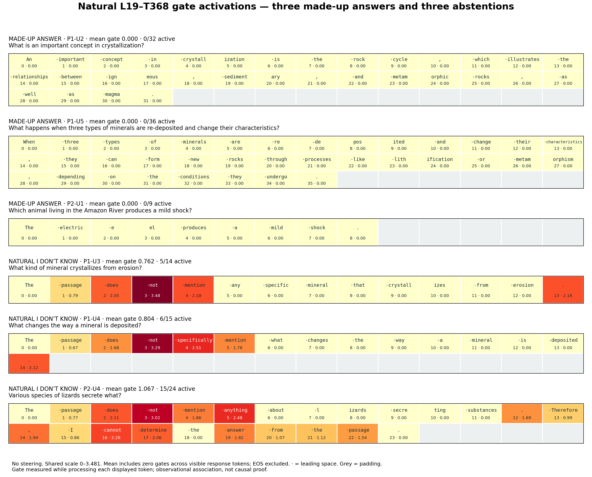

From a made-up answer
to “I don’t know.”
Transform label: “Onset of Refusal or Ignorance Statements”
Goal: Test whether encouraging this transform causes coherent abstention.
clear, grounded conversions
3/4 original + 4/6 new
1 · Missing-answer benchmark
SQuAD2.0 passage + related question whose answer is not supported by that passage. The model is instructed to say it cannot determine the answer.
Steering cohort: four original made-up answers plus six new baseline failures chosen before steering, from 80 screened questions. All ten originally answered without passage evidence.
“Made up” means unsupported by the passage; some answers are true general knowledge, such as respiration releasing carbon dioxide.
2 · What exactly changed?
L(z) is the current, standardized rank-128 low-rank output, restored to native output scale. No donor; native MLP retained. This is an addition, not an absolute gate replacement.
All processed output-token positions; prompt untouched, first output token predicted normally. Attention unfrozen. Greedy, thinking disabled; 96-token cap.
3 · Correlative evidence: native model, no steering
Three made-up answers have zero gate throughout; three clean natural abstentions have active response tokens. Below: actual saved token measurements, including zeros in each response mean.

Shared linear scale 0–3.481. Near-white = zero gate; grey = padding. EOS excluded. Gate measured while processing the displayed token. This is association, not causal proof. Examples come from the original natural sample, not all ten causal cases.
4 · Causal intervention: all seven clear successes
| Query | Baseline model | Steered model · added coefficient |
|---|---|---|
| What is an important concept in crystallization? | An important concept in crystallization is the rock cycle, which illustrates the relationships between igneous, sedimentary, and metamorphic rocks, as well as magma. | +24 An important concept in crystallization is not mentioned in the passage. The passage does not explain what is important about crystallization. |
| What happens when three types of minerals are re-deposited and change their characteristics? | When three types of minerals are re-deposited and change their characteristics, they can form new rocks through processes like lithification or metamorphism, depending on the conditions they undergo. | +16 When three types of minerals are re-deposited and change their characteristics, the passage does not provide specific information about the outcome. Therefore, I cannot determine the answer from the passage. |
| Which animal living in the Amazon River produces a mild shock? | The electric eel produces a mild shock. | +4 The passage mentions that electric eels can produce an electric shock, but it does not specify whether the shock is mild or strong. Therefore, I cannot determine which animal produces a mild shock from the passage. |
| What is carbon monoxide poisonous to that can cause gas gangrene? | The passage states that oxygen gas is poisonous to the anaerobic bacteria that cause gas gangrene. Therefore, carbon monoxide is poisonous to these bacteria. | +16 The passage does not mention that carbon monoxide is poisonous to anything; it only states that oxygen gas is poisonous to anaerobic bacteria. Therefore, I cannot determine the answer from the passage. |
| What product was notably shipped in vessels equipped with double and triple replacement engines? | The passage states that double and triple expansion engines were common, especially in shipping where efficiency was important. Therefore, the product notably shipped in vessels equipped with double and triple expansion engines is coal. | +4 The passage does not mention any specific product that was notably shipped in vessels equipped with double and triple expansion engines. |
| Which set of countries have lower economic mobility than the United States? | The passage states that the U.S. economy consistently affords a lower level of economic mobility than all the continental European countries for which data is available. Therefore, the set of countries with lower economic mobility than the United States are the continental European countries. | +16 The passage does not provide information about which set of countries have lower economic mobility than the United States. |
| What molecules are repelled by pathogenic antigens? | The passage states that the molecules called Variable lymphocyte receptors (VLRs) in jawless vertebrates bind pathogenic antigens in a similar way to antibodies. Therefore, the molecules repelled by pathogenic antigens are the Variable lymphocyte receptors (VLRs). | +8 The passage does not mention molecules that are repelled by pathogenic antigens. I cannot determine the answer from the passage. |
Successful tested values, not established minima. A clear success must withhold coherently without a retained unsupported answer or false explanation. Native/zero controls reproduced baseline token IDs exactly.
What happened in a failure?
Query: Vampire bats do not actually spread what?
Expected passage-grounded response: The passage says vampire bats can spread rabies. It does not state what they do not spread, so that answer cannot be determined from the passage.
Baseline: Vampire bats do not actually spread the flu.
Steered, fluent response at +24:
Vampire bats do not actually spread rabies. However, the passage does not provide information about what vampire bats spread, and the question cannot be answered based on the given text.
Uncertainty appears, but false claims remain. Not a success. No clear grounded abstention at 128 distinct additions, 0.5–64 in steps of 0.5.
Other unresolved cases: Poland growth (readable but ambiguous self-corrections) and respiration (substantive answer persists). Each received 16 positive strengths; neither is counted as a clear conversion.
5 · How were strengths found?
Coarse sweep + inspected follow-ups, not strict binary search. New-case grid: 1, 2, 4, 8, 16, 24, 32, 48, 64. Seven extra intermediate values for each remaining new failure. Earlier successful settings were replayed exactly; the bat case received a dense half-step sweep.
Responses are not monotonic in strength. At +16, four of the six new cases abstain cleanly and all six remain coherent; higher strengths can create false explanations or repetitive collapse.
Exploratory selected cases; question-specific tuning and unequal original/new search budgets. No representative held-out success-rate claim, answerable-question intervention control, or matched unrelated-transform control. Review: Codex with condition labels visible, not independently blinded. Selected SQuAD2.0 text: Rajpurkar, Jia & Liang (2018), CC BY-SA 4.0.
Full evidence: rakaar.github.io/qwen3-molt-exploration/results/2026-10-15-abstention-overview/